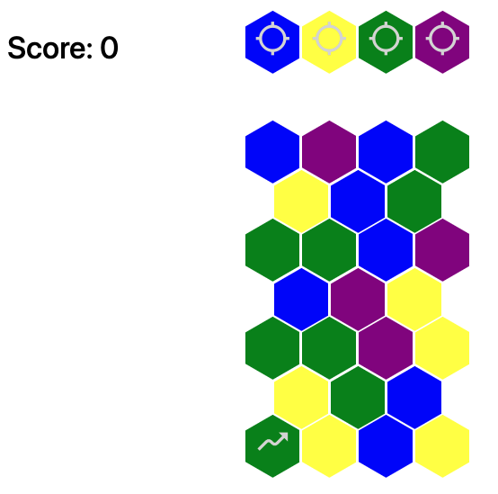
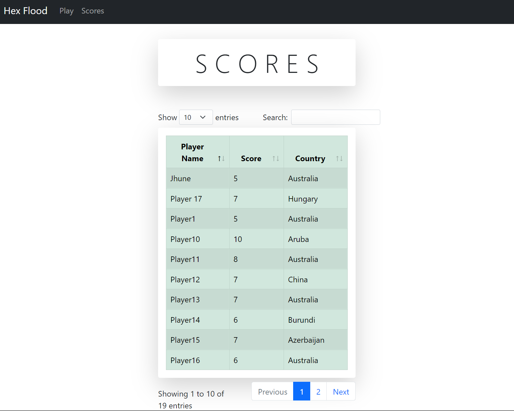

Our application, coined HexFlood is an interactive daily puzzle that seeks to engage its audience through a very traditional puzzle. When you first load the application, you are greeted with the homepage. In the innerworkings the application has already taken stock of how many days the game has been running for since its inception on the 1st of May 2022. It uses this calculation to not only display what ‘day’ of HexFlood it is, but also to uniquely generate a puzzle specific for this particular day. In this manner, all users of the applciation will be greeted with an identical puzzle.
Following this, options are available for the user to both understand how to play, view global scores and of course play the game.
The rules of the game are as follows. The user is presented a grid of hexagons each with a randomised colour (out of 4 options.) There is a ‘starting hexagon’ labelled with an arrow and 4 buttons each representing one of the four colours. Much like a flood fill algorithm, a user can select a button to change the start cell and any neighbouring cells of the same colour as the start cell to the new button colour. This process continues until all the neighbours are of the same colour and the grid is full of identically coloured hexagons.
After completing a daily puzzle, much like traditional arcade games, the user is presented with the opportunity to ‘register’ their score. They do this by simply entering their name and the country they wish to represent. After this a notification will alert the user that their score has been copied to their clipboard for sharing with the following message:
⬡⬢⬡ I finished #HexFlood number 21 in 5 moves! 😊
After this an interactive scoreboard is available which gives users functionality such as the ability to search for criteria, sort scores in ascending or descending order and etc.
As far as installation instructions are concerned, the game ideally will be accessible via a web address e.g https//www.hexflood.com At the moment it can be run locally using the flask application execution protocol. i.e. making a virtual env. and running flask.
2.1 Overview of client-side architecture
As previously mentioned, our application has three webpages. This includes our homepage which allowes navigation to both the game playing page and scores page as well as offering ‘how-to-play’ instructions for the game via a modal. As far as the puzzle generation is concerned, a seed is calculated based off the number of days since the inception of the game. Puzzle generation is then managed client-side with some simple javascript based off this precalculated seed. The current score as the puzzle progresses will be saved on the client side until the user chooses to register their score. This is done to minimise the amount of data transferred to and from the server improving overall efficiency.
2.2 To Do list of features
2.3 Alternative presentation theme: "Colourblind accessibility"
An alternative theme that we could employ could include some accessibility functions. Since our game is very colour sensitive with the hexagons, we could include a setting that changes the choices of colurs to suit the visible ranges for users with a certain type of colour blindness. This setting would be stored client-side via local storage for a particular user. We would include a dropdown menu option for this where individuals could select their form of colourblindness, Deuteranomaly, Protanomaly, Tritanomaly or Tritanopia. From this we would then change specific colours for the hexagons, for example red and green, to be purple and orange. Additionally we could implement a font size changer to aid those who are visually impared. Similar to the dropdown for the colour blindness, there could be options ‘font-up’ or ‘font-down’ that changed the size of any lettering to something comfortable for the user.
2.4 Client Side vs Server Side Rendering
Advantages
Since we only need to fetch what needs to be fetched it offers much more efficient use of the network. Excellent for low bandwindth applications such as within the mobile context.
Especially in the context of fishing data from the database
Client side rendering allows us to reuse UI components for multiple pages without the need to request these from the server each time. Obviously this enhances page loading performance and the feel of the webapp. This will tangibly look like each new page loading quicker than multipaged server-side applications
Disadvantages
If all the text is generated by JS it is much more difficult for search engines to figure out what the page is about. Meaning the webpage will rank poorly in web searches.
Browser has to both load, generate and render the HTML wheras a server side application will be able to send the browser directly the HTML to render.
Client side rendering would prove to be the ideal choice for a small game application such as the one we have developed. This is because there isnt much processing that needs to occur, it will minimise overhead costs of having a complex server and would allow for smooth gameplay. Especially when a user is conducting moves. If this component had been implemented server side, there would be a whole bunch of redundant server requests to update the game state causing major efficiency issues.
Advantages
The server does most of the heavy lifting, by generating the HTML and simply asking the browser to render it.
Each page will have its unique URL and the search engine will be able to look at this and determine the contents of the webpage, allowing it to better optimise its search alogrithm.
Disadvantages
When there is high load, navigation between webpages which require HTML from the servers will occur much slower due to the servers doing more work to handle the load.
Due to their complexity compared to client-side rendering, there is a bigger area for attacks on the database.
3.1 Overview of server-side architecture
[serverside overview]
2.2 To Do list of features